1Early labourcalm & conserve energy▾
Your uterus is softening and drawing the cervix up. Rest, hydrate, stay light.
Rest, rest, rest. Hydrate — muscles need oxygen. Breathe relaxed & deep. Say “open” and “down”. Control your thoughts → welcome oxytocin, refuse adrenaline.
 ▶Breath through surgesin 4 · out 6 — one hand on your heart, one on your belly. Inhale: send your air to baby. Exhale: release all your tension.
▶Breath through surgesin 4 · out 6 — one hand on your heart, one on your belly. Inhale: send your air to baby. Exhale: release all your tension. ▶Finding My Deep BreathBuilt to Birth · Bridget Teyler
▶Finding My Deep BreathBuilt to Birth · Bridget Teyler ▶Fear Cleansing Birth Affirmation MeditationBuilt to Birth · Bridget Teyler
▶Fear Cleansing Birth Affirmation MeditationBuilt to Birth · Bridget Teyler ▶Calm Early Labor MeditationBuilt to Birth · Bridget Teyler
▶Calm Early Labor MeditationBuilt to Birth · Bridget Teyler ▶Meditation for Labour — early labour (guided)Hypnobirthing with Anja
▶Meditation for Labour — early labour (guided)Hypnobirthing with Anja ▶Connecting to Your Baby in the WombAffirmation meditation · Bridget Teyler
▶Connecting to Your Baby in the WombAffirmation meditation · Bridget Teyler ▶Washing Away Your Anxious Thoughts (River of Peace)Bridget Teyler
▶Washing Away Your Anxious Thoughts (River of Peace)Bridget Teyler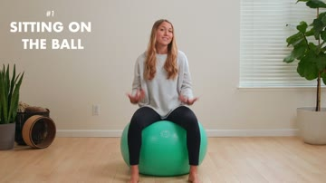
▶ 2:33Sit on the ball — active resttall spine, knees at 90°, feet flat, legs wide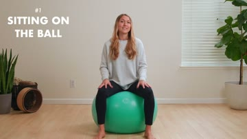
▶ 3:06Hip circlescircle your hips both ways; tuck the tailbone under at the front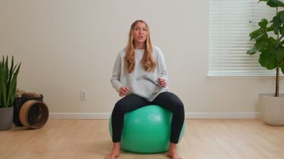
▶ 3:22Figure-8sdraw an 8 with your hips — side-to-side, then front-to-back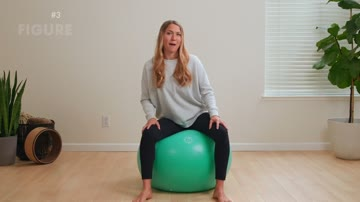
▶ 3:36Pelvic tiltson the ball or on all-fours: tuck the tailbone under, then release back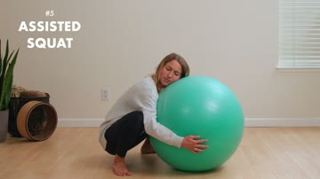
▶ 4:18Assisted squat over the ballfeet wide, drape over the ball, let your lower back round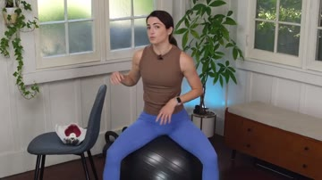
▶ 1:44Frog squat — hold a chairlegs wide, hold a chair or partner, sink into a squat, rock front-to-back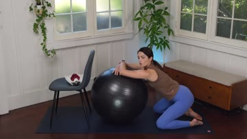
▶ 2:37Kneel & drape over the ballkneel, rest your chest on the ball, rock your pelvis front-to-back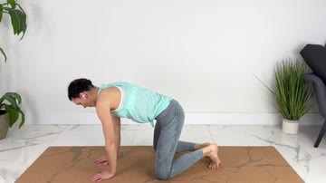
▶ 0:51Off the ballknees apart, ankles together — butterfly · backwards on the toilet · all-fours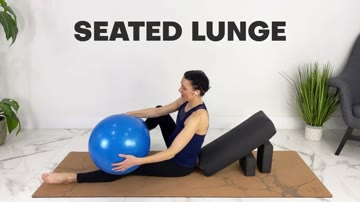
▶ 1:04Peanut ball — seated lungesit with one leg under, one leg over the peanut, knee out — rest & encourage baby down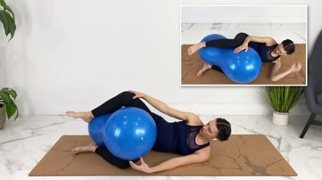
▶ 1:42Peanut ball — side-lyinglie on your side, top leg up over the peanut, ankles together — rest & help baby drop2Active labourride the surges, go inward▾
Surges are strong and close. Turn inward, get in the tub, find your rhythm.
Pain means relax & release. Welcome each surge — embrace, sink in. Get in the tub. When you think you can’t anymore, you’re near the top.
 ▶Destresser — in 4, out 6jump to the demo
▶Destresser — in 4, out 6jump to the demo ▶Bradley — in 3, out 3
▶Bradley — in 3, out 3 ▶Powerful Active Labor MeditationBuilt to Birth · Bridget Teyler
▶Powerful Active Labor MeditationBuilt to Birth · Bridget Teyler ▶Birth Waves MeditationBridget Teyler
▶Birth Waves MeditationBridget Teyler ▶Natural Labor & Delivery — Cervix opening visualizationMy Simple Meditation
▶Natural Labor & Delivery — Cervix opening visualizationMy Simple Meditation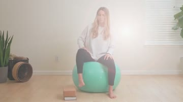
▶ 5:00Seated, one foot elevatedone foot on a stool or block; sway toward the raised leg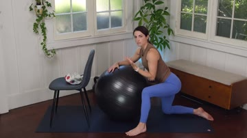
▶ 3:39Lunge over the ballone leg out, drape over the ball, rock forward-back & out to the side; swap sides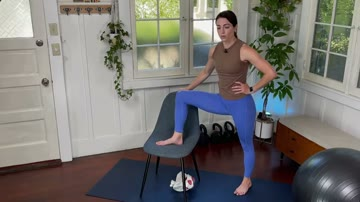
▶ 4:22Foot up on a chairstand, one foot on the chair seat, hold the back, shift forward & back; swap sides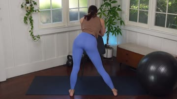
▶ 4:43Lean over a chair — sway side to sidestand and lean over the chair back, sway your hips side to side to rotate baby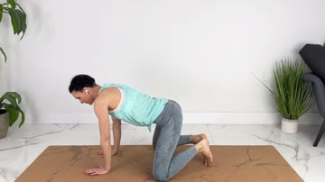
▶ 1:47Off the balllean on the bed, front knee turned out · empty your bladder · partner hip-squeeze · swap sides every ~5 surges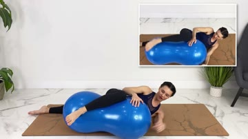
▶ 2:53Peanut ball — side-lying, leg overtop leg draped up & over the peanut — helps baby rotate (good with an epidural)3Transitionthe wall — surrender fully▾
The hardest, most intense stretch — the making of the mother. Your thinking brain takes the back seat.
This is the wall — you’re nearly there. Slow exhale through the mouth, unclench your jaw, soften your tongue. Surrender fully. Don’t push yet if baby is still rotating.
▶Horse-lips — in 4, lips 6relax jaw & pelvic floor▶Lamaze sounds“chi chi, cho cho” ▶Fear Cleansing Birth MeditationHypnobirthing with Anja
▶Fear Cleansing Birth MeditationHypnobirthing with Anja ▶Visualization MeditationGuided meditation & affirmations · Bridget Teyler
▶Visualization MeditationGuided meditation & affirmations · Bridget Teyler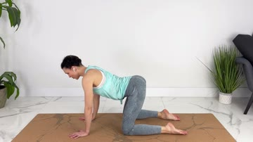
▶ 2:40Hands and kneesdrop to all-fours and rock gently — relieves back pressure, eases an early urge to push, lets baby finish turning. Urge too strong before you’re fully open? Drop to knees-to-chest (chest down, bottom up) to take the pressure off.4Pushing & birthbreathing baby out▾
Follow your body — the urge will come. The uterus does the pushing; you may not need to force.
Off your back. Go slow so the perineum can stretch (the ring of fire). Horse lips or “PAPAPA”. Touch baby’s head as it crowns. Use the J-breath.
▶Cough breath — in 3, cough out 6when you feel the urge to push: inhale 3 short breaths through your nose, then cough to push — 6 coughs ▶J-breath — birthing baby outinhale through your nose · expand your belly · low groan through the throat (muuuu) · energy to your baby, down the birth canal all the way▶Laboring down — fill & press downfill your belly like a balloon on the inhale (belly out) · then create pressure by sending the breath down to baby — moving him along, without pushing
▶J-breath — birthing baby outinhale through your nose · expand your belly · low groan through the throat (muuuu) · energy to your baby, down the birth canal all the way▶Laboring down — fill & press downfill your belly like a balloon on the inhale (belly out) · then create pressure by sending the breath down to baby — moving him along, without pushing ▶Breathing My Baby Out MeditationBuilt to Birth · Bridget Teyler
▶Breathing My Baby Out MeditationBuilt to Birth · Bridget Teyler ▶Birth Affirmations — Pushing Baby Out, calmly & with easeHypnobirthing with Anja
▶Birth Affirmations — Pushing Baby Out, calmly & with easeHypnobirthing with Anja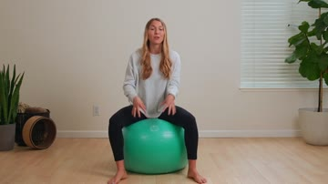
▶ 6:07Drape over ballknees together, feet splayed apart — widens the sit-bones (NOT legs-wide); tuck as you bear down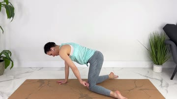
▶ 3:20Off the ballknees together, ankles out · arch your back · follow the urge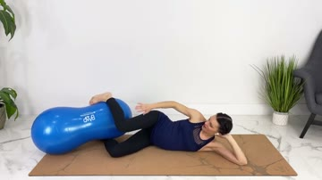
▶ 3:42Peanut ball — knees togetherpeanut between your ankles, knees together — internal rotation, less tearing◐Breathe with mefollow the circle, eyes soft▾
▶ watch this breath
⏱Contraction timertime surges · find your stage · when to go▾
Regular surges about 5 min apart, ~1 min long, strong enough you can’t talk or walk through them, held for ~30–45 min.
↻If it’s not workingrun the 10 R’s▾
- Relax — every single muscle
- Reframe your internal dialogue
- Release endorphins — get happy
- Replenish — eat or drink
- Reconcile — with yourself, body, partner, baby
- Read what your body & heart say
- Reposition physically
- Rest & be thankful
- Relinquish control
- Resolve to birth your baby
♪Sounds & visuals on loopaffirmations · ocean waves · visualization▾
 ▶Ocean waves10 hours · background loop▶Cervix opening visualizationNatural labour & delivery · play on loop
▶Ocean waves10 hours · background loop▶Cervix opening visualizationNatural labour & delivery · play on loop✚Pain & comfort remedieswhat to reach for▾
★Before labour & notesprep + Pain Free Birth course▾
| First stage | Early | Active | Transition |
|---|---|---|---|
| Overall function | Effacement & dilation | ||
| Contractions | 5–20 min apart · last 30–60 sec | 3–5 min apart · last 60–90 sec | 1–3 min apart or back-to-back · 60–90 sec |
| Cervix | 0–5 cm | 5–7 cm | 7–10 cm |
| Mental / emotional | Excited, nervous, talkative | Inward focused, not talking | “Hitting the wall”, needs most support |
| Length | 5–12+ hrs | 3–5 hrs | 30 min–2+ hrs |
 ▶15-minute labour-inducing workout
▶15-minute labour-inducing workout ▶Pelvic exercises
▶Pelvic exercises ▶Perineal massage — prepare your pelvic floorfrom week 35, every other day
▶Perineal massage — prepare your pelvic floorfrom week 35, every other day ▶Birth ball routine for pregnancyfull do-along — cat-cow, hip circles, figure-8s, squats, child’s pose · from ~week 36
▶Birth ball routine for pregnancyfull do-along — cat-cow, hip circles, figure-8s, squats, child’s pose · from ~week 36 ▶Labour prep exercise
▶Labour prep exercise ▶Labour prep exercise (2)
▶Labour prep exercise (2) ▶Birth ball to bring on & progress labournatural induction
▶Birth ball to bring on & progress labournatural induction ▶Help labour progress & naturally induce on your ownnatural induction
▶Help labour progress & naturally induce on your ownnatural induction ▶Overcome late-labour stallsessential movements & techniques if labour slows
▶Overcome late-labour stallsessential movements & techniques if labour slows ▶Pain Free Birth — course talkthe source of these learnings
▶Pain Free Birth — course talkthe source of these learnings ▶How to reduce pain in labour
▶How to reduce pain in labour ▶Counter-pressurefor your partner
▶Counter-pressurefor your partner ▶Rebozo techniquefor your partner
▶Rebozo techniquefor your partner♡Affirmationssay them out loud▾
“Contractions can’t harm me // they can’t be stronger than me, because they are me.”
“With every surge I am closer and closer to meet Emiliukas.”
“Feel, don’t fear.”
“Pain is my cue to relax and release.”
“I am grateful for every surge doing its work.”
“Thank you, body — with every wave you bring me closer to Emiliukas.”